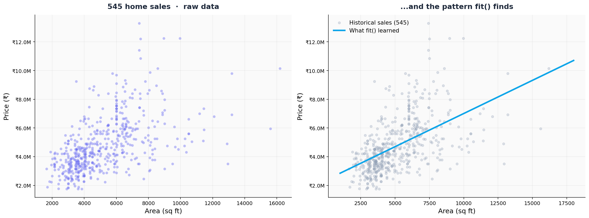

What is
prediction?
Agenda
What prediction actually means
Two lines of NEXUS, end to end
Three things you'll leave with
Say what prediction is, in one sentence
Past data, a pattern, an estimate for something you haven't seen. That is the whole idea, before any code.
Train a model with two lines of NEXUS
NEXUSRegressor(), then fit(X, y). Data upload, training, and the trained-model handle come back in seconds.
Predict a price for a home that isn't in the data
Slide to any square footage between 1,000 and 20,000 and read the model's estimate live in the notebook.
The idea,
before the code
Prediction is past data, a pattern a model finds, and an estimate for something you haven't seen.
545 real home sales, and one question
Each row records a home — square footage, bedrooms, parking, price. For this module we ignore everything except area and price.
One feature in. One number out. If you can predict price from size alone, the idea of prediction is on the table. Everything after Module 00 just adds columns.
Area → price,
in one CSV
Square feet on the x-axis, Indian rupees on the y-axis. One feature, one target, nothing else yet.
one target column.
Bigger homes cost more — usually
Plot every home as a dot and the cloud leans upward from left to right. That lean is the pattern. It is the whole thing the model has to find.
The dots are also scattered. A 5,000 sq ft home might sell for ₹3M or ₹7M depending on what we haven't measured. Price depends on more than size.
The scatter,
and what
the model
pulls out of it
Two panels. On the left, every real sale. On the right, the shape fit() returns — one line summarizing 545 dots. The line is not the data; it is the pattern inside the data.
by the training data.
The pattern, and what fit() finds.

Two verbs.
The whole interface.
fit() learns the pattern.
from fundamental import NEXUSRegressor # feature: square footage. target: sale price. X = df[["area"]] y = df["price"].values nexus = NEXUSRegressor(mode="speed") nexus.fit(X, y) print(nexus.trained_model_id_) # → your permanent model handle
The handle is the artifact.
NEXUS uploads the data, trains the model, and returns an id. That id is what you carry forward — persist it, reload it, hand it to the next module. The cloud keeps the weights; you keep the string.
predict() applies the pattern.
# one home the model never saw nexus.predict(pd.DataFrame({"area": [6000]})) # a full sweep — one call, ten predictions area_range = np.linspace(1000, 12000, 10) X_range = pd.DataFrame({"area": area_range}) preds = nexus.predict(X_range) # → an array of prices, one per square-foot value
6,000 sq ft is interpolation, not memorization.
The model never saw a 6,000 sq ft home at exactly ₹X. It saw 545 neighbours and learned the shape. When it predicts, it is reading off the line from slide 8 — which is why the same interface works for every row in Modules 01 through 08.
Drive the
slider.
You have one trained model and a slider from 1,000 to 20,000 sq ft.
Find the prediction you trust — and find one you don't.
Run the cell labelled Your turn. The slider renders below it with the scatter plot.
Drag to a square footage inside the training range — say, 5,000 sq ft. Note the red dot where the prediction lands.
Drag to a square footage outside the range — try 19,000 sq ft. Watch what the prediction does.
In one sentence, explain which prediction you would ship — and why you would hesitate on the other.
Three takeaways
Prediction is past data, a pattern, a number back
NEXUS found the price-vs-area pattern in 545 sales. Now it estimates prices for homes that were never in the dataset.
Two verbs run the workshop: fit, then predict
fit() learns. predict() applies. The interface does not change across the next eight modules, even as the data gets harder.
One feature is the floor, not the ceiling
Square footage alone leaves most of the price variance unexplained. Module 01 adds real features — and a real problem: credit default.